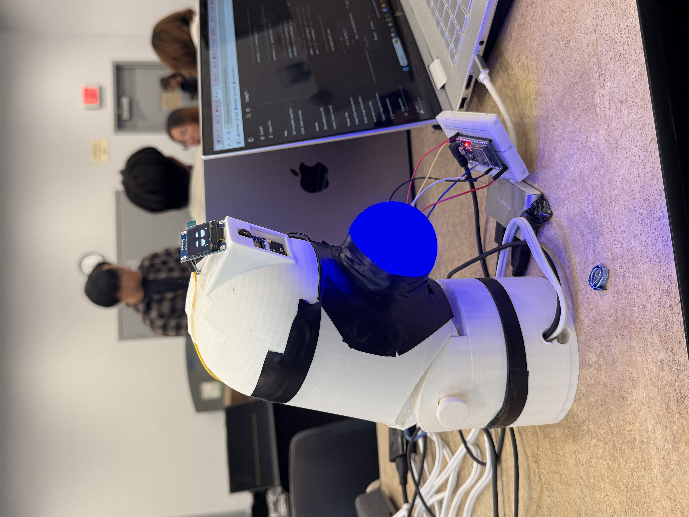

At BitHacks UCI 2025, I built ESP (Emotional Support Pet) a responsive robotic companion designed to combat loneliness for people who can't own traditional pets due to allergies, housing restrictions, or time constraints.
Problem
Loneliness and stress are growing issues, but many people are unable to own real pets. The goal was to build a device that feels alive and responsive reacting to touch and tracking the user's movement within a 36-hour hackathon deadline.
Hardware design
As hardware lead, I designed and built the full device housing. With only a 36-hour window, I had a single chance to 3D print. I verified all dimensions carefully and optimized print settings to get the full housing right on the first try. Minor finishing with hot glue, soldering, and tape ensured everything fit and functioned.

Device build photo images/project-esp-2.jpgFeatures
 Final demo photo
images/project-esp-3.jpg
Final demo photo
images/project-esp-3.jpg
What I learned
Rapid prototyping under a hard deadline forces you to make good decisions fast. Verifying dimensions before printing saved a huge amount of time there's no room to iterate at a hackathon. The project also showed how much you can accomplish when hardware, software, and sensors are all integrated seamlessly from the start.